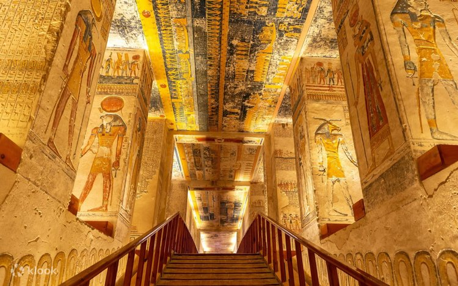
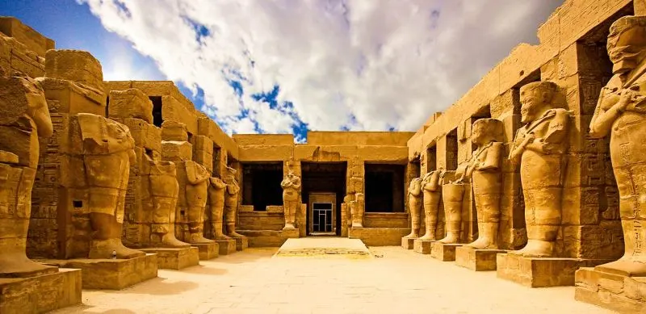
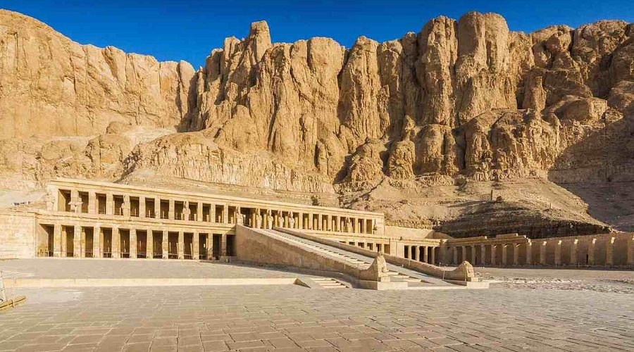
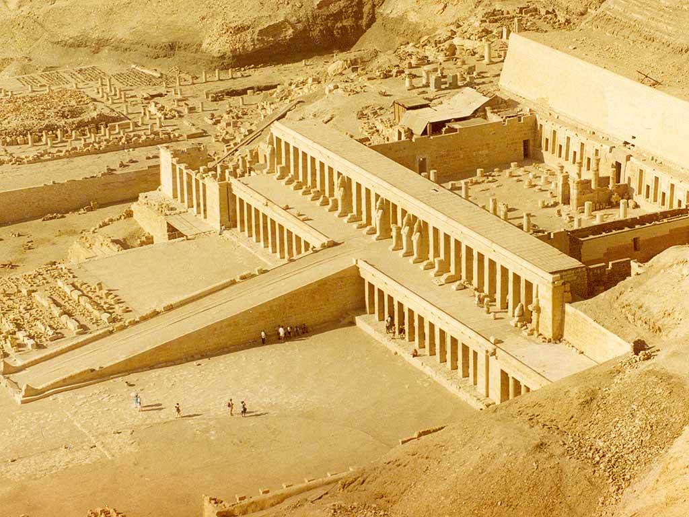
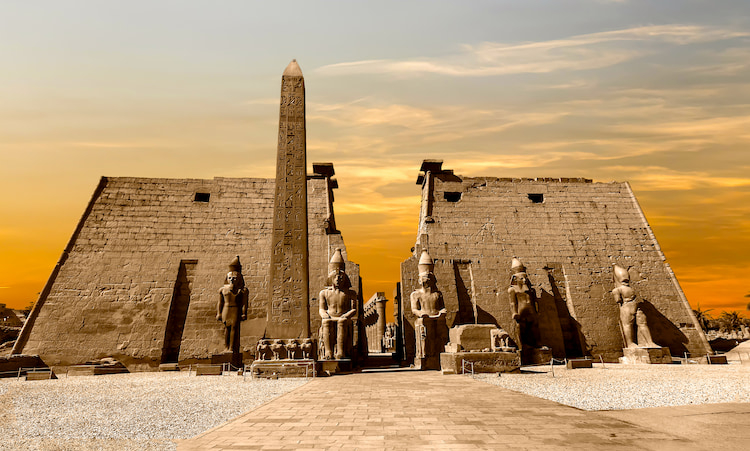
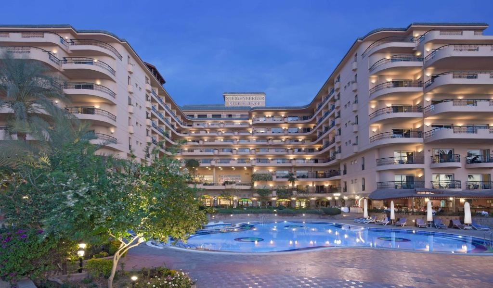
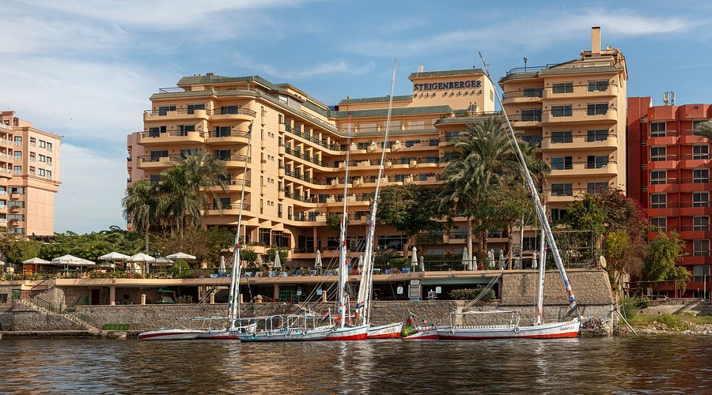

معرض الصور
معبد الكرنك
وادي الملوك
معبد حتشبسوت
معبد الأقصر

مقبرة توت عنخ آمون

طريق الكباش

الأقصر هي مدينة الأقصر (طيبة القديمة) عاصمة مصر القديمة، وتُعرف بـ "مدينة المائة باب" و"مدينة الشمس". تقع على ضفاف نهر النيل وتضم أكبر مجموعة من المعابد والآثار الفرعونية في العالم.
تضم الأقصر كنوزاً أثرية لا تُقدر بثمن، منها معبد الكرنك الأكبر في العالم، ومعبد الأقصر، ووادي الملوك الذي يضم مقبرة توت عنخ آمون الشهيرة.
تتميز الأقصر بأجوائها الصحراوية الساحرة وشروق الشمس الذهبي على ضفاف النيل، مما يجعلها وجهة سياحية فريدة لعشاق التاريخ والآثار.





